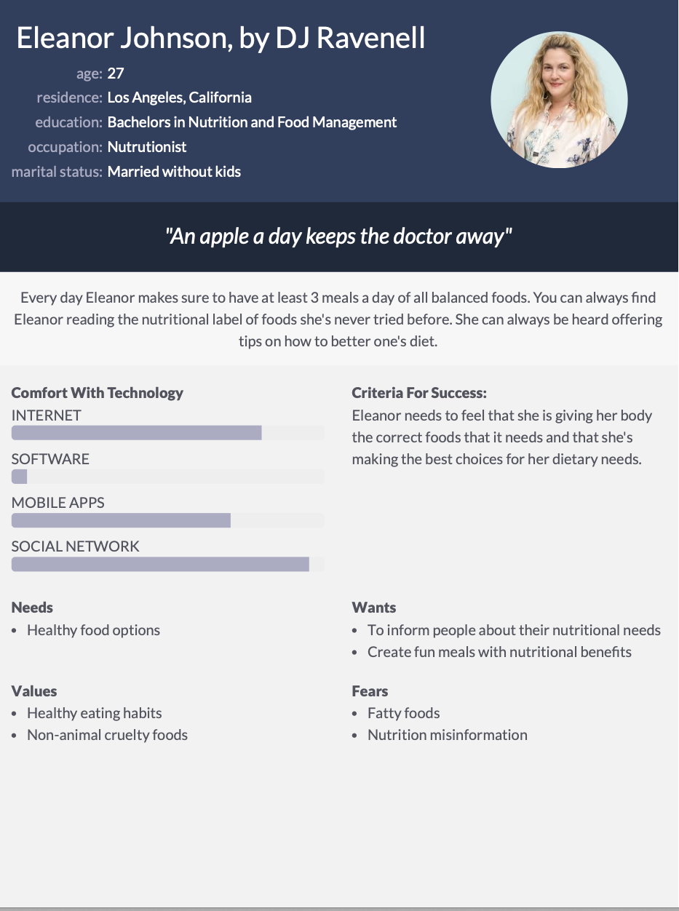
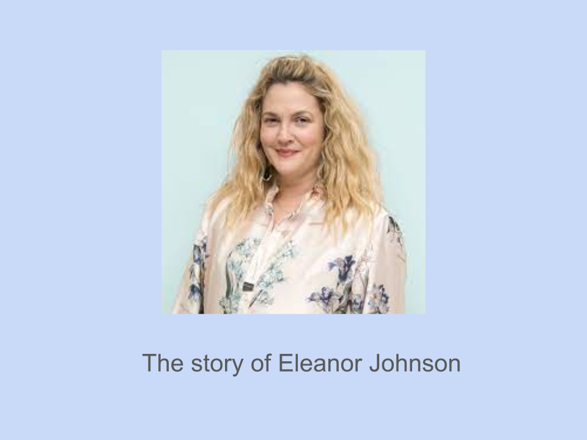
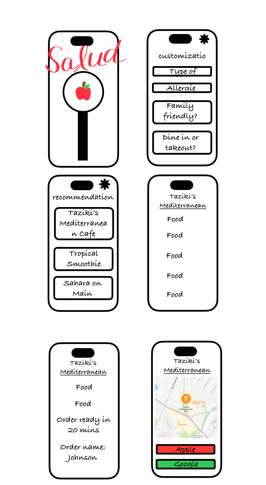

Problem Statement

People with special dietary restrictions may become frustrated or confused by the lack of visibility for food items that comply with these restrictions. Not being able to easily know if a restaurant accommodates their needs can make picking a place to eat a difficult task. Our solution would provide users with a resource to more easily find restaurants and food items that fit their dietary needs.
Affinity Diagram

My group worked to think of all things related to creating out dietary app with features for everyone!
Personas: 4 Personas For Dietary App
A few personas of the typical dietary app users.
Storyboard For Dietary App
A few stories about the typical users of the dietary app.
Sketches
Rough ideas of how the application might look.
Paper Prototype

A paper walkthrough of the potential look of every screen in the app.
Hi-Fi Prototype

A Hi-Fi Prototype of the Dietary Restrictions app.